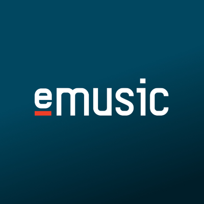

홈 > 브랜드 매거진 > MassiveMusic
MassiveMusic
매시브뮤직(MassiveMusic)은 암스테르담에 본사를 둔 글로벌 음악·소닉브랜딩 에이전시로, 2021년 음악 플랫폼 Songtradr에 인수됐다. 2024~2025년 리브랜드는 Koto가 맡았다.
산업 분야 미디어·엔터테인먼트 · 공개 등급 편집 검수 · 브랜드 평가 4 ★
Ma
MassiveMusic
한눈에 보는 브랜드
브랜드 관점
MassiveMusic 항목은 기업 연혁보다 시각 아이덴티티의 완성도를 읽는 데 적합한 자료입니다. Sound 분류 안에서 어떤 브랜드가 로고, 타입, 컬러, 아트 디렉션, 애플리케이션을 하나의 시스템으로 묶는지 보여주며, 산업 정보와 별도로 BI/CI 디자인 레퍼런스 축을 형성합니다.
일부 상세 아이덴티티는 멤버십 잠금 상태로 기록되어 공개 메타데이터 중심으로만 정리됩니다.
브랜드 아이덴티티
코토(Koto)가 작업한 리브랜드는 'New Dimensions in Sound'를 전략 플랫폼으로 삼아 흩어져 있던 사업 부문을 하나의 서사로 묶었다. 비대칭 특성을 유지하되 선을 더 날카롭게 다듬은 로고·워드마크, 모노크롬을 기조로 시그니처 오렌지를 절제해 쓰는 색 팔레트, 소리의 강약을 표현하도록 quiet·medium·loud 세 모드로 운용되는 Forma DJR Display 서체가 핵심이다.
시스템 중심에는 소름·동공 확장 같은 음악에 대한 생리적 반응에서 착안한 제너러티브 패턴 언어가 자리하며, 그라데이션과 모션이 주파수처럼 박동하도록 설계됐다.
제품과 서비스
MassiveMusic 항목의 제품·서비스 정보는 일반 상품 카탈로그가 아니라 브랜드 아이덴티티 산출물 기준으로 정리됩니다. 전체 에셋 26개, 이미지 5개, 영상 21개, 로컬 저장 이미지 5개를 통해 정지 이미지와 영상 에셋의 비중을 확인할 수 있고, 이는 로고 적용, 컬러 시스템, 캠페인 톤, 패키지 또는 공간 적용 가능성을 검토하는 출발점이 됩니다.
사람들
타임라인
BI/CI 변천사
확인된 BI/CI 이미지가 아직 없습니다.
함께 읽을 브랜드
Be
Beams
미디어·엔터테인먼트 · 편집 검수BeamsBeams는 2023년에 기록된 Sound 계열의 브랜드 아이덴티티 사례입니다. Only가 아이덴티티 작업의 디자이너로 기록되어 있습니다. 로고, 타입, 컬러, 아트...
OS
OSESP
미디어·엔터테인먼트 · 편집 검수OSESPOSESP는 2024년에 기록된 Sound 계열의 브랜드 아이덴티티 사례입니다. Polar가 아이덴티티 작업의 디자이너로 기록되어 있습니다. 로고, 타입, 컬러, 아...
Si
Sing King
미디어·엔터테인먼트 · 편집 검수Sing KingSing King는 2022년에 기록된 Sound 계열의 브랜드 아이덴티티 사례입니다. Nomad가 아이덴티티 작업의 디자이너로 기록되어 있습니다. 로고, 타입, 아...

미디어·엔터테인먼트 · 디렉토리eMusic이뮤직(eMusic)은 1998년 출범한 미국의 구독형 디지털 음악 다운로드 서비스다. DRM-free MP3 판매의 선구자로, 인디 중심 카탈로그를 제공한다.
Ph
Philharmonie Luxembourg
미디어·엔터테인먼트 · 편집 검수Philharmonie LuxembourgPhilharmonie Luxembourg는 2023년에 기록된 Sound 계열의 브랜드 아이덴티티 사례입니다. NB Studio가 아이덴티티 작업의 디자이너로 기록...
Et
Eternal Research
미디어·엔터테인먼트 · 편집 검수Eternal ResearchEternal Research는 2025년에 기록된 Sound 계열의 브랜드 아이덴티티 사례입니다. Cotton가 아이덴티티 작업의 디자이너로 기록되어 있습니다. 공...
 미디어·엔터테인먼트 · 편집 검수New York Botanical Garden
미디어·엔터테인먼트 · 편집 검수New York Botanical GardenNew York Botanical Garden는 2024년에 기록된 Museums, Galleries & Libraries 계열의 브랜드 아이덴티티 사례입니다. Wo...
NN
NN North Sea Jazz Festival
미디어·엔터테인먼트 · 편집 검수NN North Sea Jazz FestivalNN North Sea Jazz Festival는 2022년에 기록된 Sound 계열의 브랜드 아이덴티티 사례입니다. Studio Dumbar/DEPT가 아이덴티티...